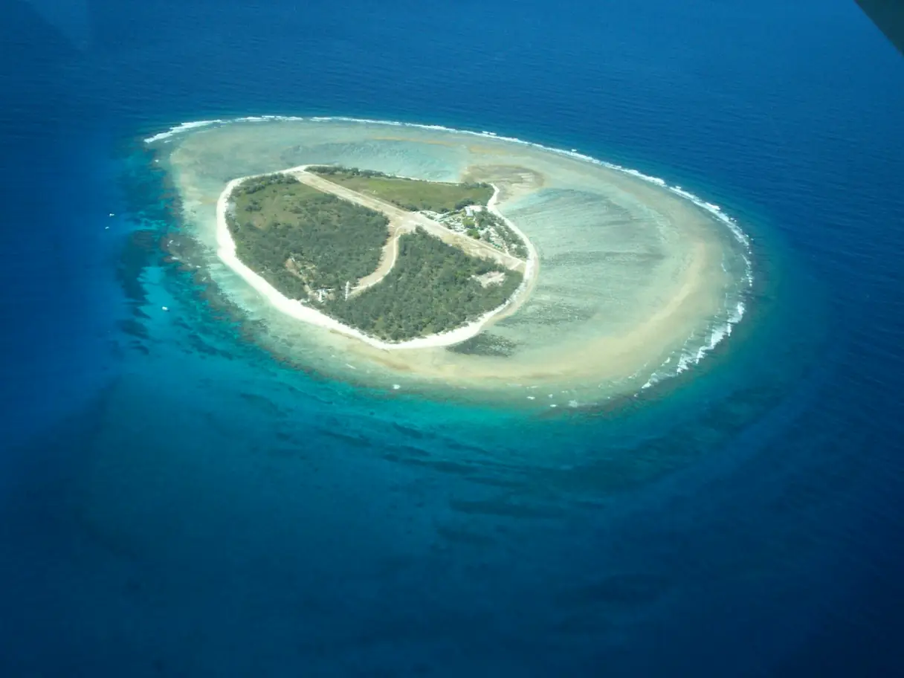

Lady Elliot Island
Queensland, Australie · snorkeling, plongée

Petite île corallienne tout au sud de la Grande Barrière, entourée d’un récif accessible depuis la plage. Le lagon se prête au snorkeling tranquille et les raies manta sont souvent observées autour de l’île.
- Lieu
- Queensland, Australie
- Niveau
- Débutant
- Activités
- snorkeling, plongée
- Type d'eau
- Mer / océan
- Coordonnées
- -24.11, 152.71 (position approximative du secteur)
Dangers à connaître
- Courants hors du lagon, surtout sur les côtés exposés : reste dans les zones indiquées par l’île.
- Corail peu profond à marée basse : ne marche pas dessus.
Le conseil d'Ocean Buddy
Snorkele dans le lagon autour de la marée haute : à marée basse, il devient trop peu profond pour nager sans abîmer le corail.
Ouvrir dans Ocean Buddy Télécharger sur l'App Store
Source : Fiche Ocean Buddy · septembre 2026 · à vérifier localement.